Hari Ini Aku Bisa …
Centang kalau kamu sudah merasa bisa di akhir pelajaran (centangmu tersimpan di peramban ini).
🔥 Pemanasan: Kamu Lihat Apa Hari Ini?
Coba ingat-ingat: tadi pagi sebelum berangkat sekolah, kamu sudah lihat apa saja di ponsel? Mungkin video lucu, poster info lomba, status teman, atau artikel berita. Semua itu dibuat oleh seseorang, lalu dibagikan sampai nyangkut di layarmu.
Nah, hari ini giliran kamu! Kamu akan belajar cara membuat konten digital dan menyebarkannya ke orang lain, lalu langsung praktik bikin karya bersama kelompok.
💡 Apa Sih Media Digital & Konten Digital?
Media digital adalah sarana untuk membuat, menyimpan, mengirim, dan menampilkan informasi dalam bentuk data digital. Contohnya laptop, ponsel, kamera, mikrofon, dan internet.
Konten digital adalah isi atau informasi yang dibuat dan dibagikan lewat media digital. Anggap saja media itu “piringnya”, kontennya “makanannya”.
Internet itu seperti perpustakaan raksasa. Isinya macam-macam berkas: halaman web (html), pdf, dokumen, video, sampai suara.
🎨 6 Bentuk Konten Digital
Konten digital punya enam bentuk: teks, gambar, suara, animasi, video, dan interaktivitas. Satu karya bisa memakai beberapa bentuk sekaligus, lho. Itulah yang disebut multimedia.
Contoh multimedia yang populer: podcast video, tayangan slide yang ada suaranya, pertunjukan animasi, dan film.
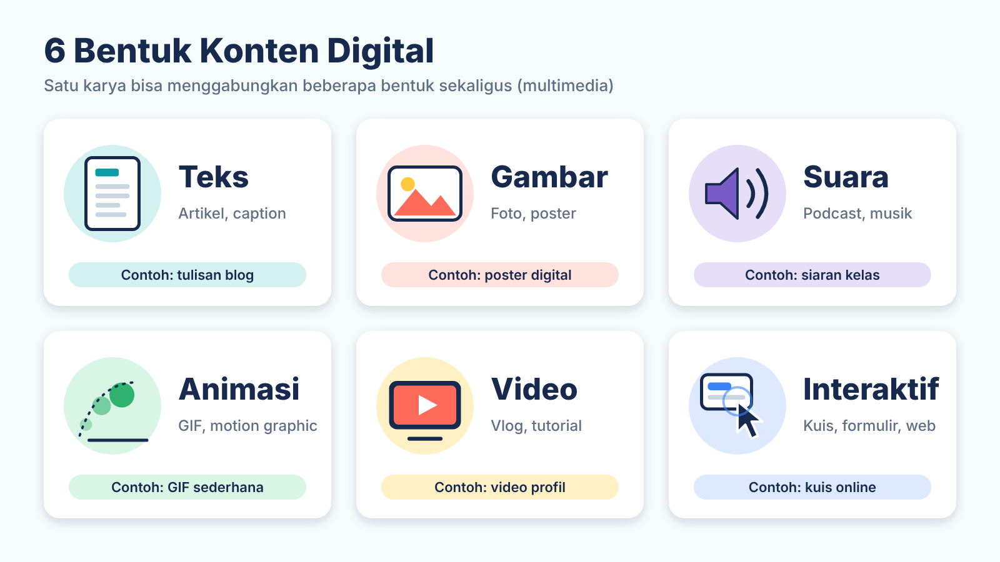
- Poster = gambar + teks
- Video tutorial = gambar + suara + teks
- Kuis online = teks + gambar + interaktivitas
🛤️ Dari Ide sampai Dibagikan
Bikin konten itu ada alurnya. Garis besarnya dibagi dua:
Produksi = proses membuat konten (langkah 1–4).
Diseminasi = proses menyebarkan konten ke audiens (langkah 5–6).
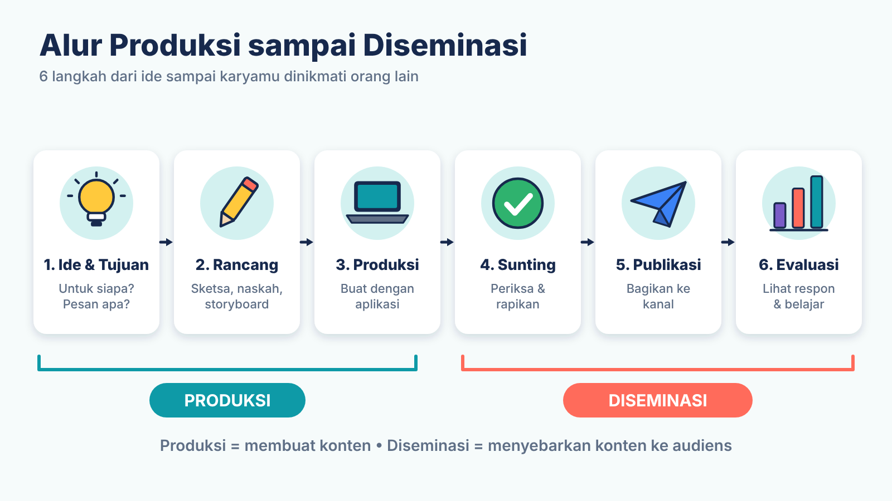
| Langkah | Pertanyaan kuncinya | Contoh: Poster “Jaga Mangrove” |
|---|---|---|
| 1. Ide & tujuan | Untuk siapa? Pesan apa? | Teman satu sekolah; pesan: mangrove melindungi pantai |
| 2. Rancang | Tata letaknya bagaimana? | Sketsa poster di kertas |
| 3. Produksi | Pakai aplikasi apa? | Menyusun poster di PowerPoint |
| 4. Sunting | Sudah benar dan rapi? | Cek salah ketik, kontras warna, sumber gambar |
| 5. Publikasi | Lewat kanal apa? | Simpan jadi PDF/JPG, kirim ke grup kelas |
| 6. Evaluasi | Bagaimana tanggapan audiens? | Baca komentar & kartu umpan balik |
📣 Mau Dibagikan ke Mana?
Kanal itu “jalan” yang dilewati kontenmu untuk sampai ke audiens. Pilih kanal yang tepat supaya karyamu benar-benar dibaca.
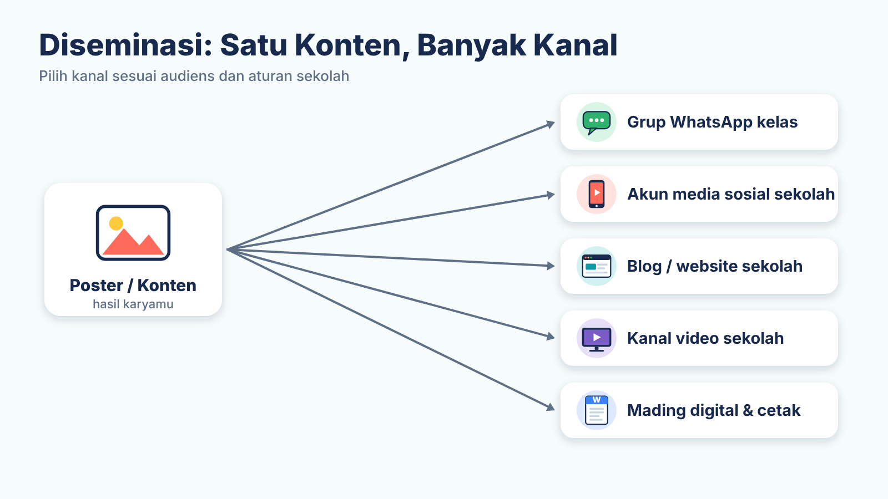
| Kanal | Kelebihan | Hati-hati |
|---|---|---|
| Grup chat kelas | Cepat & langsung | Ukuran file terbatas, mudah tertimbun |
| Media sosial sekolah | Jangkauan luas | Privasi & jejak digital; perlu izin sekolah |
| Blog / web sekolah | Arsip rapi | Perlu admin yang mengelola |
| Kanal video | Cocok untuk video | Durasi & hak cipta musik |
| Mading digital / cetak | Menjangkau semua orang, tanpa kuota | Tempatnya terbatas |
🧰 Kenalan dengan Perkakasmu
Pakai aplikasi itu seperti mengendarai sepeda: kamu perlu kenal sepedanya, tahu cara mengendarainya, dan punya tujuan mau ke mana. Setiap aplikasi punya objek utama yang dikelola:
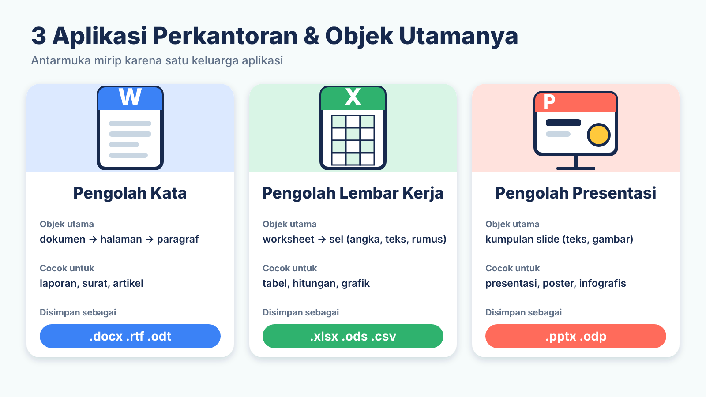
- Pengolah kata → dokumen (halaman, paragraf, kata)
- Pengolah lembar kerja → worksheet (sel berisi angka, teks, rumus)
- Pengolah presentasi → kumpulan slide (teks, gambar, dll.)
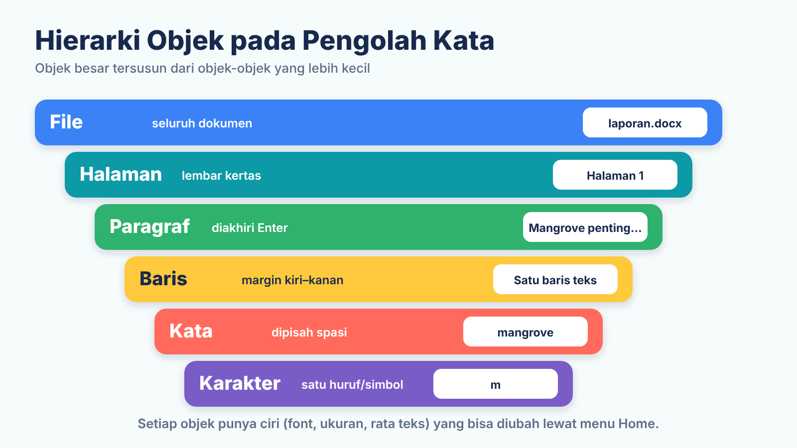
Layanan yang disediakan aplikasi disebut fitur (Open, Save, Save As, Print, dan lain-lain). Aplikasi yang “sekeluarga” biasanya tampilannya mirip, jadi kalau sudah bisa satu, yang lain lebih gampang. Satu fitur pun bisa dipanggil dengan banyak cara: lewat menu, klik kanan, atau pintasan keyboard. Pilih cara yang paling cepat buatmu!
Di pengolah kata, objek tersusun seperti tangga: file → halaman → paragraf → baris → kata → karakter. Tiap objek punya ciri yang bisa diubah, misalnya karakter punya jenis huruf, ukuran, dan warna.
🗂️ Format File: Kenali Ekstensinya
Lihat nama file di akhir: .docx, .xlsx, .pptx, .png, .pdf? Itu namanya ekstensi. Ekstensi memberi tahu jenis file dan aplikasi yang bisa membukanya.
Mau mengubah format? Pakai Save As (atau Export). Mengganti ekstensi secara manual, misalnya .docx jadi .xlsx, bukan konversi: file-nya tetap tidak bisa dibuka karena isinya tidak ikut berubah.
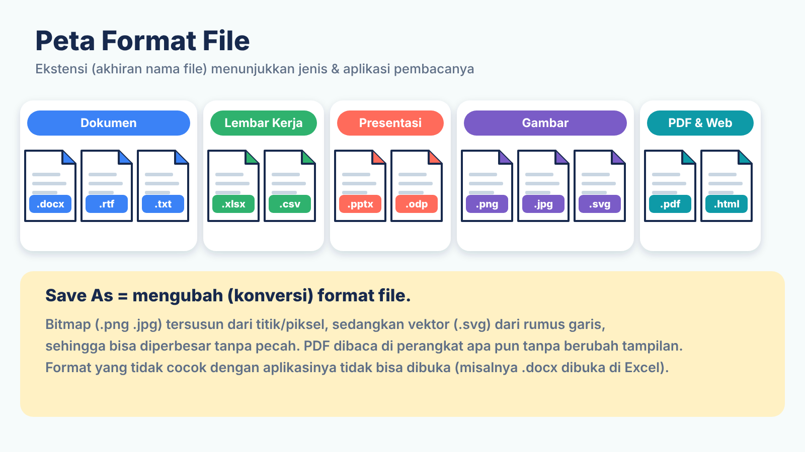
- .pdf → bisa dibuka di perangkat apa pun tanpa berubah tampilan, cocok untuk dibagikan
- .jpg / .png → gambar bitmap (tersusun dari titik/piksel); jpg ukurannya lebih kecil karena dikompresi
- .svg → gambar vektor, tetap tajam walau diperbesar
- .csv / .txt → teks polos; csv memisahkan nilai dengan koma
✂️ Jurus Salin–Tempel
Perintah cut–copy–paste terinspirasi dari zaman dulu, saat orang menyunting naskah ketikan dengan gunting dan lem. Di komputer, perantaranya adalah clipboard: tempat penampungan sementara.
Karena banyak aplikasi mengenal clipboard, kamu bisa memindahkan teks, tabel, dan gambar dari satu aplikasi ke aplikasi lain.
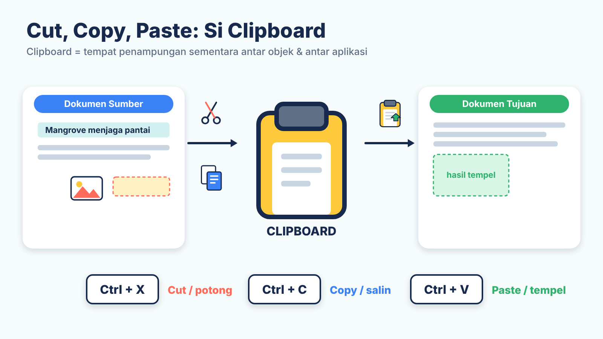
- Cut (Ctrl + X) → memindahkan; aslinya hilang dari tempat semula
- Copy (Ctrl + C) → menggandakan; aslinya tetap ada
- Paste (Ctrl + V) → menempelkan isi clipboard
📸 Jurus Tangkap Layar
Kadang kamu perlu “memotret” layar: peta, tampilan aplikasi, atau bukti kerja. Ada dua cara di Windows:
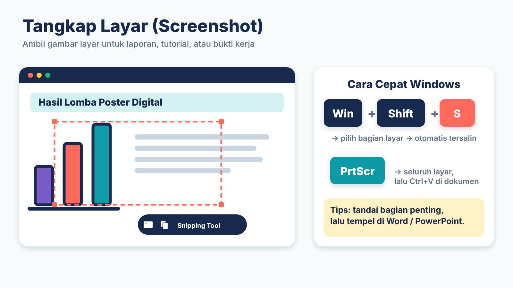
- PrtScr → menangkap seluruh layar, lalu tempel dengan Ctrl + V
- Win + Shift + S → membuka Snipping Tool untuk menangkap sebagian layar
- Bagian yang tidak perlu bisa dipotong dengan fitur crop
✨ Biar Karyamu Enak Dilihat
Karya yang bagus bukan yang paling ramai, tapi yang pesannya paling jelas. Ingat 4 jurus desain ini:
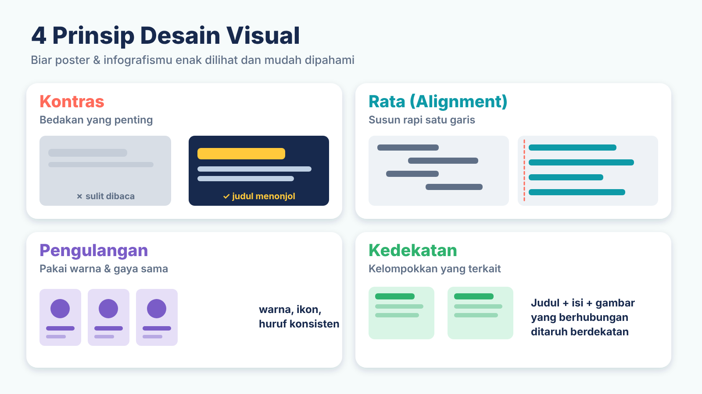
- Kontras → bedakan yang penting (judul besar, warna terang di latar gelap)
- Rata (alignment) → susun teks dan gambar pada satu garis
- Pengulangan → pakai warna dan gaya huruf yang konsisten
- Kedekatan → kelompokkan hal yang berhubungan
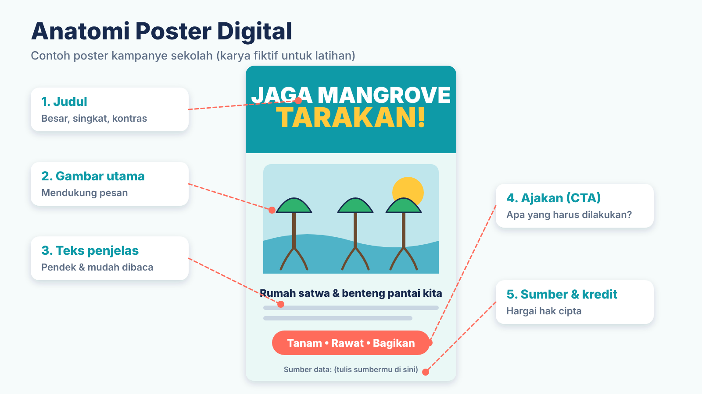
Poster yang baik punya lima bagian: judul, gambar utama, teks penjelas, ajakan (CTA), dan sumber/kredit. Gunakan maksimal 2–3 jenis huruf dan sisakan ruang kosong biar napas.
🛡️ Cek Dulu Sebelum Klik “Publikasikan”
Sekali dibagikan, karyamu bisa dilihat banyak orang dan menjadi jejak digitalmu. Jadi tanyakan lima hal ini:
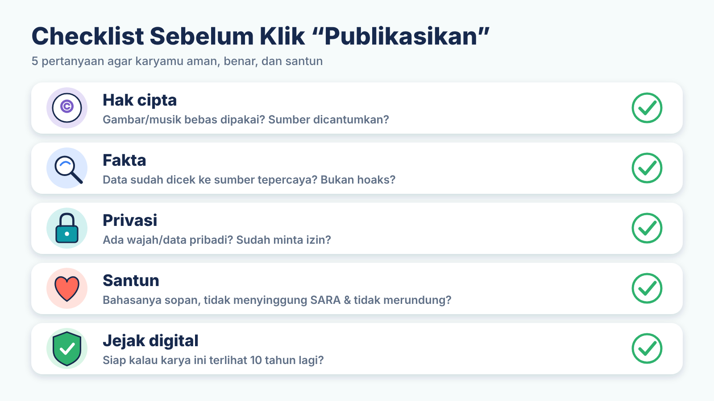
- Hak cipta → pakai karya sendiri, karya berlisensi terbuka, atau minta izin. Selalu cantumkan sumber.
- Fakta → data sudah dicek ke sumber tepercaya? Bukan hoaks?
- Privasi → wajah dan data pribadi orang lain butuh izin.
- Santun → tidak mengejek, tidak menyinggung SARA, tidak merundung.
- Jejak digital → apakah kamu bangga dengan karya ini nanti?
🚀 Saatnya Proyek!
Tantangan: bagaimana kita membuat dan menyebarkan konten yang mengajak teman-teman sekolah peduli lingkungan (misalnya sampah plastik, hemat air, atau mangrove di Tarakan)?
Dalam kelompok 4 orang, pilih satu produk, bagi peran, lalu kerjakan dalam 30 menit.
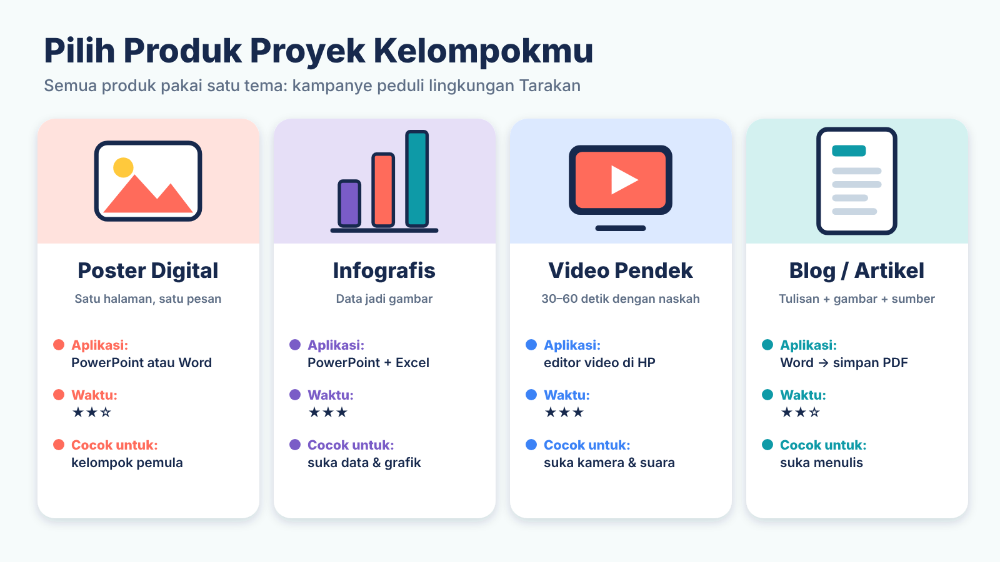
- Ketua → mengatur waktu, memastikan semua terlibat
- Penulis/Peneliti → naskah, data, dan sumber
- Desainer → tata letak dan prinsip desain
- Publikator → menyimpan file dan membagikan ke kanal
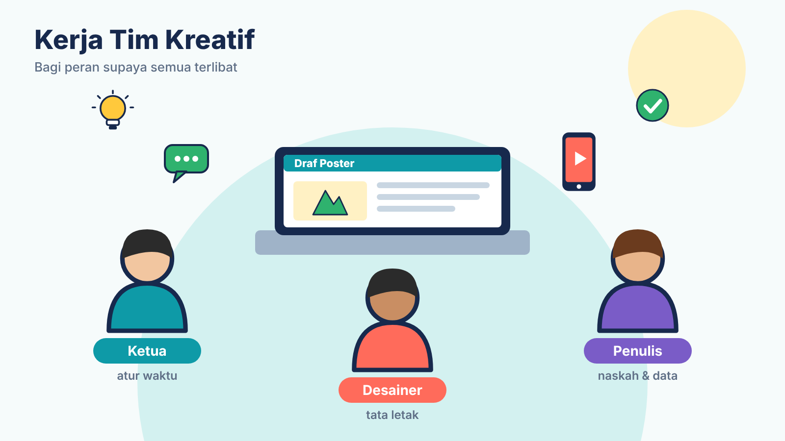
Langkah kerja proyek
- Rencanakan (8 menit): isi lembar perencanaan di LKPD.
- Draf (10 menit): buat kerangka dan kumpulkan bahan.
- Produksi (15 menit): buat karya dengan aplikasi pilihanmu.
- Sunting (5 menit): cek desain, sumber, dan izin.
- Diseminasi: pajang di galeri karya, beri dan terima kartu “2 Bintang 1 Harapan”, lalu bagikan ke kanal kelas.
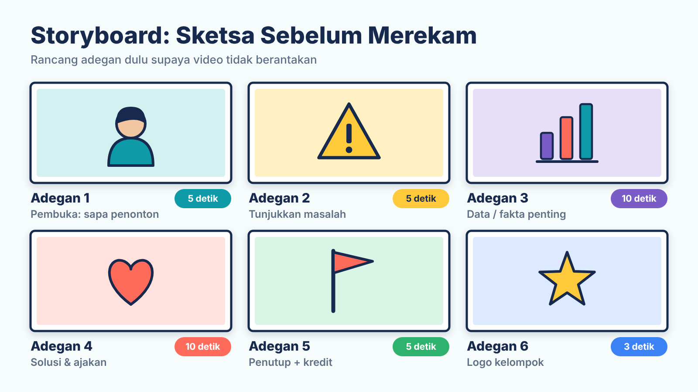
Pilih video? Buat dulu storyboard (sketsa adegan) supaya rekamanmu tidak berantakan. Total 30–60 detik sudah cukup.
Cek Pemahaman: Mini Kuis
Pilih jawabanmu. Jawaban benar akan berwarna hijau.
Rangkuman
- Konten digital punya 6 bentuk; multimedia menggabungkannya.
- Produksi = membuat konten; diseminasi = menyebarkannya ke audiens.
- Kenali aplikasi, objek, fitur, dan format file; Save As untuk konversi.
- Salin–tempel dan tangkap layar membantu memadukan konten antar aplikasi.
- Cek hak cipta, fakta, privasi, kesantunan sebelum mempublikasikan.
Kosakata Penting
- Media digital
- Sarana membuat, menyimpan, mengirim, dan menampilkan informasi digital.
- Konten digital
- Isi atau informasi yang dibuat dan dibagikan lewat media digital.
- Multimedia
- Gabungan beberapa bentuk konten dalam satu penyajian.
- Produksi
- Proses membuat konten.
- Diseminasi
- Proses menyebarkan konten ke audiens.
- Kanal
- Saluran untuk membagikan konten (grup chat, blog, mading, dll.).
- Ekstensi
- Akhiran nama berkas yang menunjukkan jenis berkas.
- Clipboard
- Penyimpanan sementara untuk cut, copy, dan paste.
- Fitur
- Layanan/ciri yang disediakan sebuah aplikasi.
- Storyboard
- Sketsa urutan adegan sebelum merekam video.
Refleksi
Jawaban refleksi tidak disimpan di server; salin ke buku tugas atau LKPD-mu.